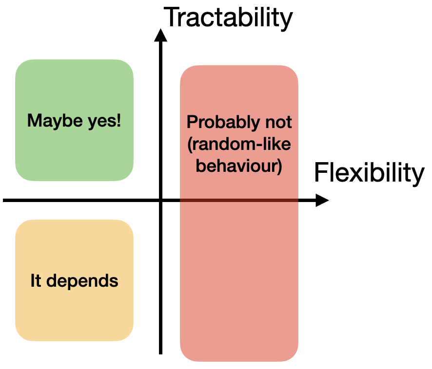

When should you expect Bayesian optimization to work well?
As much as I believe in the potential of Bayesian optimization (BO) to be useful for scientific discovery, after 4+ years I have seen many instances where BO does not work. In this post I explain a simple heuristic rule to decide whether you should expect BO to work well or not.
For the purposes of this heuristic, I project BO algorithms onto two axes:
- Model flexibility: how many datasets can your model fit? Equivalently, how “broad” is your model’s prior? The broader, the more “flexible” the model.
- Tractability: how tractable is exact Bayesian inference? The more approximations that are used, the less tractable it us.
My heuristic to answer “will BO work well” is then as follows:

I’ll walk through it below.
Right half: flexible models => random-like BO
The more flexible a model is, the less that acquiring additional data will change the model’s predictions. Because BO fundamentally exploits connections between data points to avoid redundant queries, the more “independent” each data point is, the more BO will probably behave like random search.
Random search behavior is not inevitable, and quite a few methods try to avoid this behavior, most notably trust region methods. By restricting optimization to a small “trust region”, the effective flexibility of a model may be reduced. In the absence of such corrective measures however, random-like behavior is likely to dominate.
Bottom-left: intractable models might work
In the bottom-left I’ve written “it depends” because the behavior of BO will be highly influenced by the kinds of approximate inference used. The effect of approximate inference techniques on BO behavior is not well-studied and will clearly depend on the approximation used. Two possible phenomena of concern are:
- Ignoring important observations, leading to redundant actions (in the worst case, querying the same point repeatedly). This can clearly happen with dataset approximations (eg core sets or inducing inputs) if important data points are not included.
- Over-updating on observations, underestimating uncertainty near observed data points (a potential failure mode of GPs with random Fourier features). This could cause BO to prematurely dismiss certain regions of input space, or not find the precise location of an optimum.
In fact, both these phenomena could potentially occur in the same BO run. I have less experience with parametric models like BNNs, but my guess is that there are lots of other failure modes which are more complex and less well-documented.
Top-left: safest region, but no guarantees even then
With an inflexible model disincentivizing random behavior and tractable inference preventing failures due to weird predictions, things are in place to go well. But even then it’s not guaranteed. The model could be a poor fit for the actual function. You could choose a poor acquisition function. You may fail to actually maximize the acquisition function properly in a prohibitively large search space.
Conclusion and limitations
Overall, this post says:
- BO is unlikely to work well with a very flexible model because it essentially degenerates into random search.
- Approximate inference can cause all kinds of problems whose effects are hard to predict.
- Therefore, the best chance of BO success is when you have an inflexible model and exact (or nearly exact) inference.
I think the biggest limitation of this framework is that it neglects the effect of the acquisition function, which is quite large. A poorly-chosen acquisition function can ruin an otherwise great BO setup. Conversely, a well-chosen acquisition function could (in principle) save a poor BO setup.1 I may therefore revise this framework in the future.
Footnotes
A potential example is using a “trust-region” acquisition function with approximate inference in such a way that regions with poor approximate inference are heavily penalized and therefore not chosen.↩︎
Citation
@online{tripp2024,
author = {Tripp, Austin},
title = {When Should You Expect {Bayesian} Optimization to Work Well?},
date = {2024-12-10},
url = {https://austintripp.ca/blog/2024-12-10-when-should-bo-work/},
langid = {en}
}